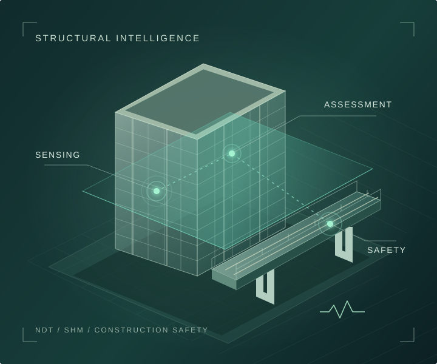

비파괴검사
MATERIALS & STRUCTURAL ASSESSMENT재료와 구조물을 손상시키지 않고 상태와 결함을 평가하는 계측·진단 방법을 연구합니다.
비파괴검사, 구조건전성 모니터링, 건설안전, 머신러닝.
NDT & SHM Lab의 연구와 학술 성과를 소개합니다.

재료와 구조물을 손상시키지 않고 상태와 결함을 평가하는 계측·진단 방법을 연구합니다.
구조물의 응답과 변화를 모니터링하고, 안전성 평가와 유지관리로 연결하는 방법을 연구합니다.
머신러닝과 데이터 분석을 활용하여 상태 진단, 예측과 의사결정을 지원하는 방법을 연구합니다.
건설 현장의 위험요인과 작업환경을 이해하고, 사고 예방과 체계적인 안전관리 방법을 연구합니다.
경북대학교 공과대학 건축학부 · 조교수
비파괴검사와 구조건전성 모니터링을 중심으로 구조물의 안전성과 유지관리를 연구합니다.
Nondestructive Testing and Evaluation, 1–26
Journal of the Architectural Institute of Korea 42 (4), 359–367
경북대학교 공과대학 건축학부
대구광역시 북구 대학로 80
강상구 교수 · Sanggoo Kang